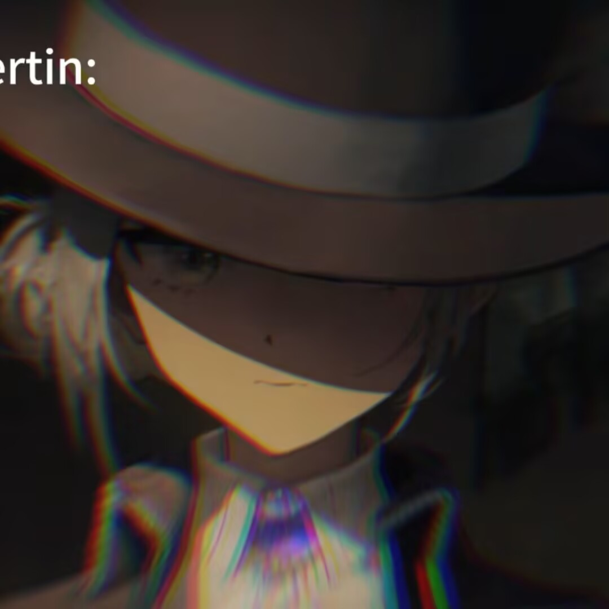

MaoXiao_jiu
MaoXiao_jiu
beta1.1
更多▾
建议使用电脑访问本站,以获得更好的观感
这个网站的主要开发者,其中的大部分UI与内容正是出自于此
在MaoXiao_jiu编写网站的过程中,给MaoXiao_jiu提供了建议,也指出了MaoXiao_jiu的编写错误之处
给予MaoXiao_jiu启发(其实MaoXiao_jiu的这个网站就是很早以前fangyuan提出制作的网站的后代)

很早以前MaoXiao_jiu开发网站时的最大支持人